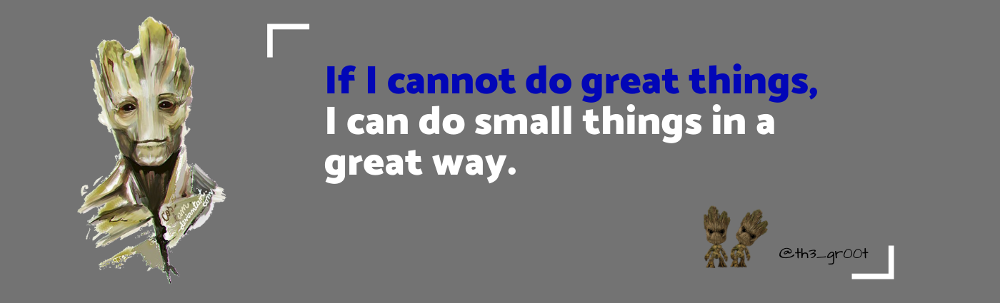

About Me
Since when I was a young boy I enjoyed tinkering with devices to get to understand how they work. The thrill came from disassembling the device, analyzing every part, and later successfully assembling back the device in one piece and getting it to work.
I have a Bachelor's degree in Information Systems and Technology with over three years experience in the security industry.
I enjoy doing the following:
- Reverse Engineering
- Binary Exploitation
- Network Research
- Code Review
- Junk Hacking
- Hardware Hacking
- DevOps and Automation
- Programming
- Contributing to Open Source Software (OSS)
- Writing whacky scripts